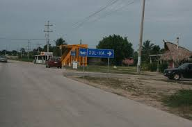
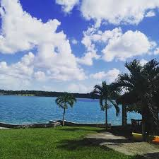
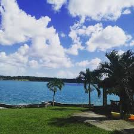

Su historia es: Xul-Ha significa en maya “donde termina el agua”, pues se encuentra en la parte sur de la laguna de Bacalar.
Tan sólo el recorrido en la laguna es una impactante experiencia visual, pues la zona conocida como “Los Rápidos”, en donde
la velocidad aumenta debido a que el canal se hace más estrecho, concentra la mayor cantidad de estromatolitos. Estas piedras
vivientes milenarias han sido parte del proceso generador de oxígeno en la tierra y sólo existen en raros lugares del planeta.
Los estromatolitos han logrado establecer nuevos ecosistemas y se pueden considerar como los antepasados de los arrecifes, Pues
permitieron el desarrollo y la prefloración de nuevas especies a través de millones de años.
Población en Xul-Ha: La población total de Xul-Ha es de 1838 personas, de cuales 936 son masculinos y 902 femeninas.
Edades de los ciudadanos.
Estructura económica
En Xul-Ha hay un total de 453 hogares.
De estas 448 viviendas, 35 tienen piso de tierra y unos 90 consisten de una sola habitación.
404 de todas las viviendas tienen instalaciones sanitarias, 405 son conectadas al servicio público, 423 tienen acceso a la luz eléctrica.
La estructura económica permite a 36 viviendas tener una computadora, a 295 tener una lavadora y 390 tienen una televisión.
Educación escolar en Xul-Ha

 
